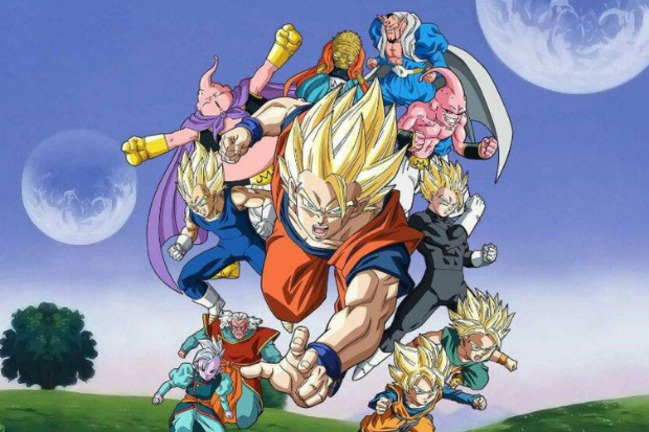
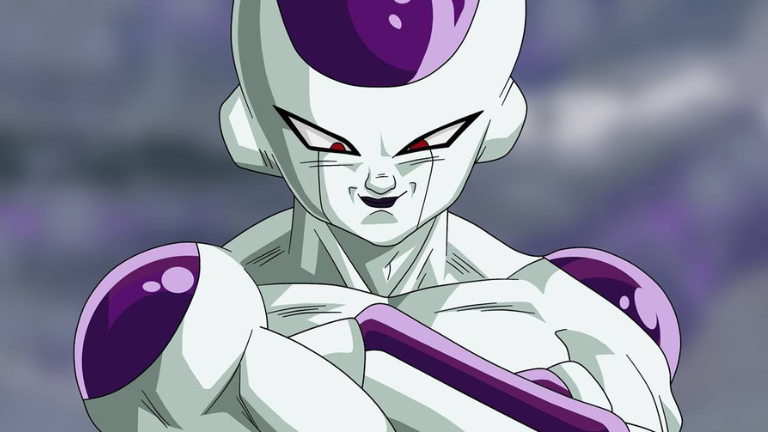
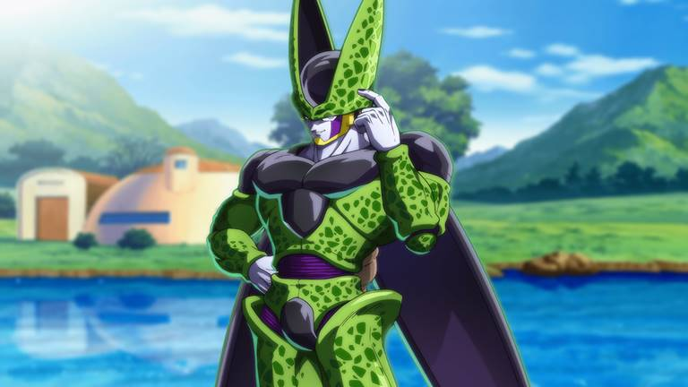

Sinopse
As aventuras de um poderoso guerreiro chamado Goku, seu filho Gohan e seus aliados, que se esforçam para defender a Terra das ameaças. Eles são auxiliados por um dragão que concede os desejos de quem quer que reúna as sete Esferas do Dragão.
Freeza
Freeza é um Imperador Galáctico que dirige o Exército Galáctico de Freeza, temido por sua crueldade e poder. Ele é descendente de Chilled, filho do Rei Cold, irmão mais novo de Coola, e pai de Kuriza. Seu nome é um trocadilho da palavra "freezer".
Majin Boo
Majin Boo, depois conhecido como Mr. Boo, é a primeira forma de Boo que apareceu na série Dragon Ball. Majin Boo tem várias formas e todas elas são simplesmente referidas como "Majin Boo" na série.

Cell
Cell é um dos principais supervilões que vem da linha do tempo alternativa no manga Dragon Ball e no anime Dragon Ball Z. Ele é a final criação de Dr. Gero, designado para ter todas as habilidades dos melhores lutadores que já habitaram ou visitaram a Terra; o resultado é um "guerreiro perfeito", que possui numerosos traços genéticos e habilidades especiais.
